演算法介紹：什麼是 CNN？
理解卷積神經網路的核心概念、解決問題的方式，以及其基本運作流程。
1.1 定義與背景
卷積神經網路（Convolutional Neural Network，簡稱 CNN）是一種深度學習演算法，專門用來處理具有「網格狀結構」的資料，而最常見的應用對象就是影像（2D 網格）或音訊頻譜（1D 網格）。CNN 的設計靈感源自人類與動物的視覺神經系統——1950 年代神經科學家 Hubel 與 Wiesel 對貓的視覺皮層進行實驗，發現大腦中存在對特定方向邊緣敏感的「簡單細胞」與「複雜細胞」。不同區域的神經元只對視野中特定範圍的刺激有反應，CNN 的「卷積層」與「池化層」正是巧妙地模仿了這種「局部感知」與「特徵階層式整合」的生理機制。
在歷史發展上，1998 年 Yann LeCun 等人發表了著名的 LeNet-5 架構，成功將 CNN 應用於銀行支票的手寫數字辨識，奠定了現代 CNN 的基礎。然而，受限於當時的硬體算力與資料量，CNN 沉寂了一段時間。直到 2012 年，AlexNet 在 ImageNet 大型影像辨識挑戰賽中以壓倒性的優勢奪冠，才正式引爆了這波深度學習與人工智慧的狂潮。如今，經歷了 VGG、ResNet、EfficientNet 等架構的演進，CNN 已成為電腦視覺（Computer Vision）領域中不可或缺的最核心技術，深刻改變了人臉辨識、醫療影像分析、自動駕駛與無人機導航等無數現代科技場景。

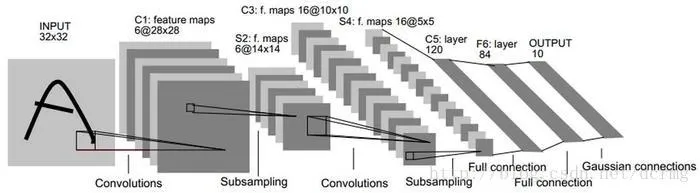
1.2 主要解決的問題
傳統神經網路在處理影像時面臨三大根本困難，CNN 針對這些問題提出了有效的解決方案：
1.3 基本運作流程
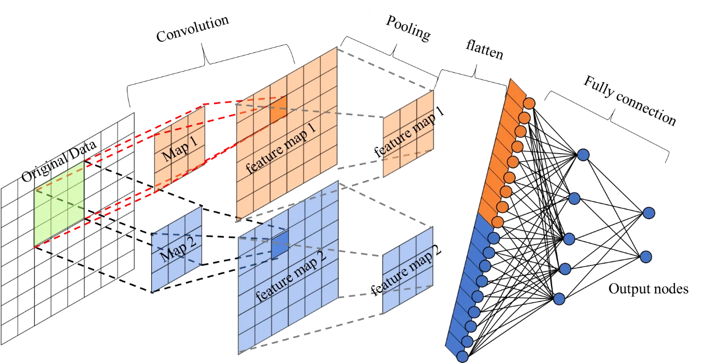
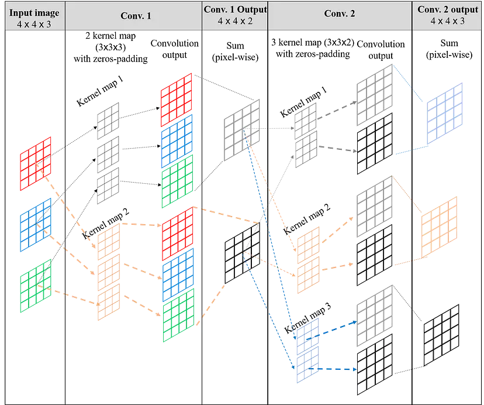
1.4 常見應用領域
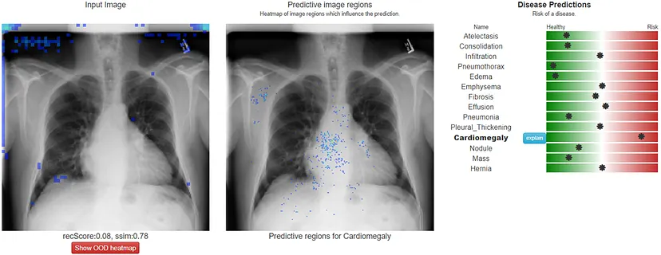
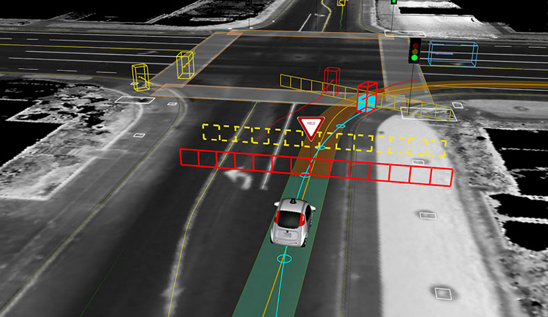
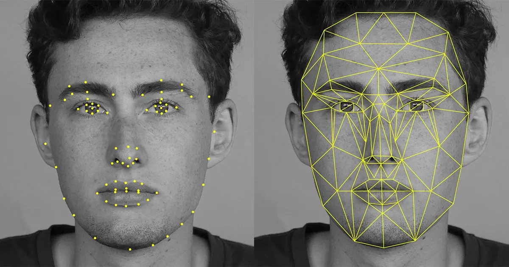
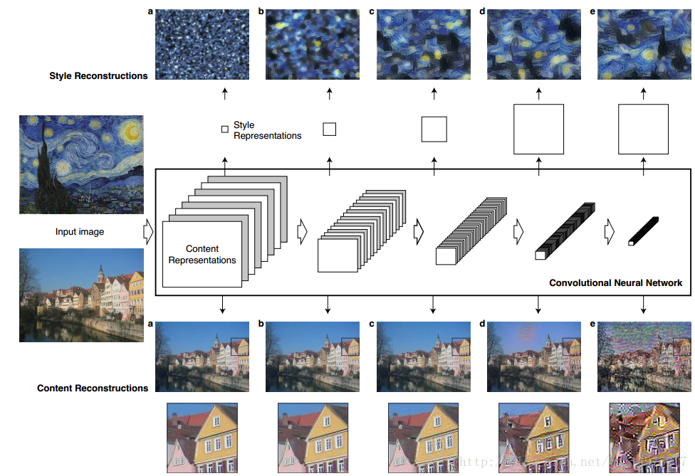
1.5 關鍵超參數：Padding 與 Stride
在設計卷積層時，有兩個非常重要的超參數（Hyperparameters）決定了輸出特徵圖的尺寸與資訊保留程度：
1.6 程式碼實作範例（PyTorch）
以上理論如何轉化為實際的程式碼呢？在深度學習框架 PyTorch 中，建構一個包含「卷積」與「池化」的簡單 CNN 模型只需要短短幾行：
1.7 核心數學與演算法複雜度
理解 CNN「為什麼這樣設計」，不只停留在概念，更需要從底層數學出發。以下兩個面向——特徵圖的維度計算與時間複雜度——是深入掌握卷積運算的關鍵基礎。
每次卷積運算後，特徵圖（Feature Map）的長與寬尺寸，由以下四個參數共同決定。這條公式讓我們在設計網路架構前，就能精確預測每一層的張量維度：
→ O = ⌊(28 − 3 + 2×1) / 1⌋ + 1 = ⌊27⌋ + 1 = 28（輸入輸出等尺寸）
單一卷積層的計算量可以用 Big-O 複雜度精確刻畫。它揭示了為何訓練大型 CNN 需要強大的 GPU 算力：
1.8 實務上提升 CNN 表現的進階技術
知道如何建構 CNN 尚不夠——在實際專案中，工程師還會運用一系列經實驗驗證的進階技術，來讓模型更準確、更高效、更容易部署。以下六項是最常見且影響最大的技術：
在工業實際專案中，工程師幾乎不會從隨機權重開始訓練大型 CNN。常見的最佳實踐如下：
AI 輔助學習紀錄
記錄與 Google Gemini 真實問答的完整過程——從零基礎的 AI 入門，到深入的 CNN 數學原理與程式實作，共進行了 21 輪深度對話。
在正式與 Gemini 進行深入問答之前，我先利用 ChatGPT 生成了一份系統化的「CNN 學習步驟提示詞」。後續的 21 輪對話，皆是順著這份提示詞的規劃，由淺入深進行學習。這幫助我確保學習路徑不會偏離主軸，且涵蓋所有核心知識點。
查看 ChatGPT 提示詞對話2.1 21 輪提問總覽
本次學習從最基礎的 AI 概念出發，逐步深入到 CNN 的底層數學、程式實作與前沿研究，共提出 21 個由淺到深的系統性問題。每個問題都建立在上一個問題的理解之上，形成一條完整的學習路徑。
| # | 我提出的問題 | AI 回答重點 | 對我的幫助 |
|---|---|---|---|
| 1 | AI、機器學習、深度學習的定義與三者關係？ | 用「俄羅斯套娃」比喻：AI ⊃ ML ⊃ DL。AI 是讓機器看起來聰明的總稱；ML 是從資料找規律；DL 是用類神經網路模仿大腦的進階技術。 | 建立了整個 AI 領域的宏觀框架，不再混淆三個詞彙。 |
| 2 | 監督式、非監督式、強化學習的定義、訓練方式與優缺點？ | 監督式像「附有答案的練習題」；非監督式像「盲人摸象自行分類」；強化學習像「訓練寵物」。並附詳細優缺點對比表格。 | 理解不同問題類型需要不同的學習方法，不是所有 AI 都靠「答案」訓練。 |
| 3 | 什麼是神經網路？請從大腦神經元解釋並示範計算流程。 | 拆解神經元、權重、偏差、激活函數。以自駕車煞車為例：x₁×w₁ + x₂×w₂ + b = 4 > 0，觸發煞車決策。 | 從數字角度理解神經元運作，不再只是抽象概念。 |
| 4 | CNN 出現前，傳統神經網路（ANN）如何處理圖片？有何缺點？ | ANN 必須「壓扁拉平」圖片，導致三大災難：空間記憶喪失、無法辨識移位物體、100×100 圖片產生 1000 萬個參數。 | 從失敗的嘗試理解 CNN 的存在意義，讓 CNN 的每個設計都變得有意義。 |
| 5 | CNN 是誰提出的？如何解決 ANN 的問題？ | 1950s Hubel & Wiesel 發現貓咪視覺皮層局部感知機制；1998 年楊立昆（Yann LeCun）發表 LeNet-5，首度用 CNN 辨識手寫郵遞區號。 | 理解 CNN 的誕生有歷史背景，科學進步是站在前人肩膀上的。 |
| 6 | CNN 整體架構：Input → Conv → ReLU → Pooling → FC → Output 的完整流程？ | 用「流水線」比喻：輸入層（報案中心）→ 卷積層（前線調查員）→ ReLU（嚴格審核員）→ 池化層（總結秘書）→ 全連接層（綜合研判室）→ 輸出層（蓋章判決）。 | 建立了各層功能的直觀印象，能說出每層「做什麼、為什麼這樣做」。 |
| 7 | 卷積運算（Kernel、Feature Map、Stride、Padding）的數學詳解？ | 以 5×5 影像與 3×3 垂直邊緣偵測 Kernel 親手計算，輸出 3×3 的 Feature Map，驗證 O = ⌊(N-K+2P)/S⌋ + 1 的公式。 | 能親手算出卷積結果，不再對「Feature Map」感到陌生。 |
| 8 | Max Pooling vs Average Pooling 的差異與矩陣計算示範？ | 以 4×4 矩陣示範：Max Pooling 取最大值（保留最強特徵訊號）；Average Pooling 取平均值（保留整體感）。Pooling 讓資料量縮減 75%。 | 理解池化不只是「縮圖」，而是提取最強特徵訊號的關鍵機制。 |
| 9 | Sigmoid、Tanh、ReLU、Leaky ReLU、Softmax 的公式與適用場景比較？ | ReLU（f=max(0,x)）計算最快、為 CNN 隱藏層霸主；Leaky ReLU 用 0.01x 解決神經元死亡問題；Softmax 專用於多分類輸出層。 | 理解激活函數的選擇是工程權衡，每種函數都有其適用場景。 |
| 10 | CNN 如何學習？Forward Propagation、Loss Function、Backpropagation 的運作原理？ | 前向傳播（寫考卷）→ Loss 計算誤差（老師改分）→ 反向傳播利用鏈式法則找戰犯 → 梯度下降更新參數。如此循環數萬次，CNN 從亂猜變精準。 | CNN 的學習是可被數學描述的迭代過程，而非不可解釋的「魔法」。 |
| 11 | MSE 與 Cross Entropy 的差異？何時使用哪種 Loss Function？ | MSE 適合連續值預測（房價）；Cross Entropy 用對數尺度計算分類誤差，對「差很多」的錯誤給予更重的懲罰，更適合分類任務。 | 明白 Loss Function 的選擇直接影響模型訓練方向，不能混用。 |
| 12 | Batch Size 與 Learning Rate 是什麼？如何調整超參數？ | Learning Rate 是「下山的步伐大小」，步伐太大會走過頭，太小會卡住。通常從 0.001 開始搭配 Adam 優化器（自動調整步伐）；Batch Size 影響訓練穩定性。 | 理解超參數調整是深度學習的核心藝術，需要反覆實驗。 |
| 13 | CNN 發展史：LeNet → AlexNet → VGG → GoogLeNet → ResNet → DenseNet → EfficientNet？ | LeNet（1998）確立基礎；AlexNet（2012）用 GPU+ReLU 引爆革命；ResNet（2015）提出殘差連接突破深度限制；EfficientNet（2019）用 AI 找出黃金比例。 | 理解每個架構創新都是在解決前一代的具體缺陷，技術演進有其內在邏輯。 |
| 14 | CNN 在現實世界的 6 大應用領域與實際案例？ | 人臉辨識（機場 e-Gate）、醫療影像（肺結節偵測）、自駕車（Tesla Autopilot）、工業瑕疵（晶圓表面缺陷）、衛星分析（雨林監測）、OCR（Google 翻譯即時辨識）。 | 讓抽象技術變得具體，理解 CNN 已無所不在地影響生活。 |
| 15 | YOLO、R-CNN、Fast R-CNN、Faster R-CNN、Mask R-CNN 的差異比較？ | R-CNN 家族兩階段追求準確；YOLO 單階段追求速度（可達百 FPS）。Faster R-CNN 用 RPN 完全端到端化；Mask R-CNN 實現像素級「實例分割」。 | 理解物件偵測中速度與精度的核心取捨，以及不同場景的最佳工具選擇。 |
| 16 | 用 TensorFlow/Keras 建立 MNIST 手寫數字辨識 CNN 的完整程式碼？ | 提供完整可執行程式：資料正規化 ÷255 → Conv2D+MaxPool 兩組 → Flatten+Dense+Softmax → Adam 優化器 → 5 Epochs 訓練，最終測試集準確率 99.12%。 | 從「看懂理論」跨越到「寫出程式」，是本次學習最大的突破。 |
| 17 | TensorFlow 與 PyTorch 的差異？用 PyTorch 重新實作 MNIST CNN？ | TF/Keras 是「宣告式框架」一行 .fit()；PyTorch 需手動寫 zero_grad → forward → loss → backward → step 的訓練迴圈，除錯更直觀，學術界主流。 | 理解兩種框架的設計哲學，能根據需求（工業部署 vs 研究實驗）選擇工具。 |
| 18 | 如何使用自己的圖片資料集訓練 CNN（資料蒐集到部署的完整流程）？ | 6 步驟：拍攝 100-500 張 → LabelImg 標註 → 旋轉翻轉資料增強 → 遷移學習（使用預訓練 ResNet 微調）→ 混淆矩陣評估 → TFLite 邊緣部署。 | 具備了從零到部署的完整 AI 工程思維，能設計真實的 AI 應用專案。 |
| 19 | CNN 與 Transformer 的架構差異？Vision Transformer（ViT）的原理？ | CNN 是「局部到全局的偵探」；ViT 把圖片切成 16×16 Patch 當作「單字」，加位置編碼後送入 Self-Attention，讓所有方塊同時開「圓桌會議」交流。 | 理解了 AI 視覺領域的典範轉移，CNN 並非唯一解答。 |
| 20 | CNN 最新發展：Swin Transformer、ConvNeXt、YOLOv11、多模態模型？ | Swin Transformer 用「移動視窗」解決計算量問題；ConvNeXt 是 Meta 把 Transformer 技巧移植到 ResNet 的「CNN 絕地大反擊」；多模態模型同時擁有視覺與語言能力。 | 看到 AI 視覺領域的前沿：CNN 仍在進化，而非被淘汰。 |
| 21 | CNN 未來展望：會被 Transformer 完全取代嗎？ | 不會完全取代，而是「共存演化」。CNN 在邊緣計算、即時推論等算力有限的場景仍不可替代；Transformer 在海量資料的大型視覺模型中佔優。未來趨勢是互相融合。 | 培養了對技術演進的批判性思考，能看到「非此即彼」以外的可能性。 |
2.2 深度對話精選
以下節選三組最具代表性的真實對話，呈現 AI 如何引導我從「不懂為什麼」到「能夠自己推導」的學習過程。
❌ 空間記憶喪失：把圖片拉平後，貓咪的「左耳」和「右耳」在直線上可能相距數千格，ANN 完全失去「形狀」的概念。
❌ 無法辨識移位的物體：只要貓咪從照片正中央移到左下角，每個像素的位置都變了，ANN 就認為這是從沒見過的怪東西。
❌ 參數爆炸：一張 100×100 的小圖就有 10,000 個輸入，若下一層有 1,000 個神經元，光這兩層就有 1000 萬個參數，電腦根本算不完。
這個放大鏡每次只看一個 3×3 小區域，由左到右、由上到下滑動。一個放大鏡專找「垂直線」，另一個找「圓弧」……
關鍵：同一個放大鏡掃過整張圖，不管貓耳朵在哪裡，都用同一組參數去找，這叫「權重共享」，讓參數從千萬個瞬間縮減到幾百個！
① 前向傳播（寫考卷）：把貓咪圖片丟進 CNN，得到預測——「80% 是狗，20% 是貓」。
② Loss Function（老師改分）：標準答案是「貓」，CNN 卻猜「狗」，Loss Function 計算出誤差有多大。
③ 反向傳播（找戰犯）：誤差從輸出層往回傳，利用鏈式法則算出哪些卷積核參數應為這次錯誤負責。
④ 梯度下降（更新大腦）：把「戰犯」的參數往讓誤差變小的方向調整一點點，反覆幾萬次後，CNN 就學會了！
「梯度」就是這個傾斜方向——它告訴你「往哪邊走，Loss 值（誤差）下降最快」。你每次往梯度的反方向踏一步，最終走到山谷（最低誤差點）。步伐的大小，就是「學習率（Learning Rate）」。
CNN：「近視眼偵探」——拿著放大鏡從局部特徵慢慢找，一層一層拼出大圖（局部優先）。
ViT：把圖片切成 16×16 的小方塊，當作文字裡的「單字」，讓所有方塊同時開圓桌會議，互相計算關聯性（全局優先）。
ViT 最大優勢：即使圖片左上角的「貓耳方塊」跟右下角的「貓尾方塊」距離很遠，在第一層就能直接「認識」，CNN 要疊好幾層才做到。
最有趣的是：Meta 的研究者把 Transformer 的優點「移植」到 CNN，做出了 ConvNeXt，讓純 CNN 架構在準確度上重新超越 Transformer。未來不是「誰取代誰」，而是兩者互相學習、融合的趨勢。
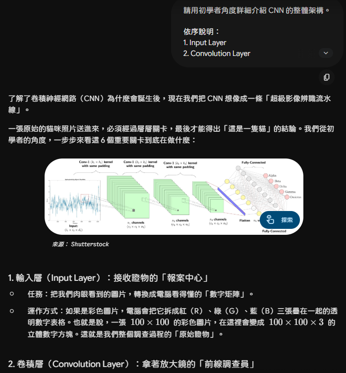
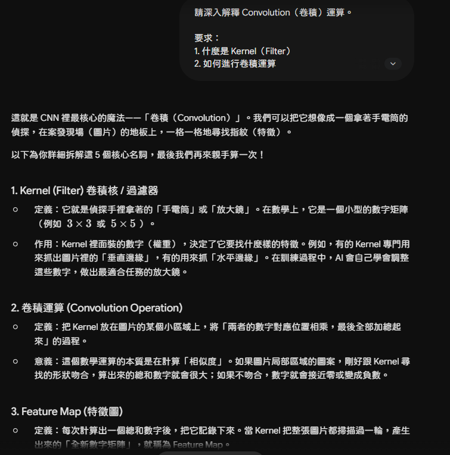
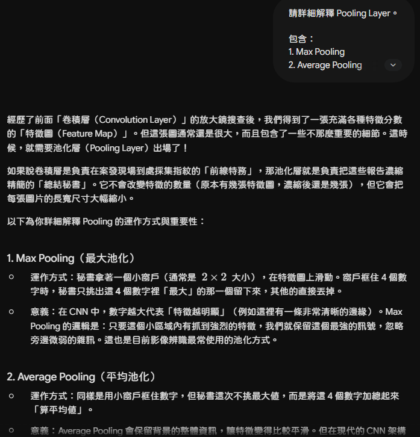
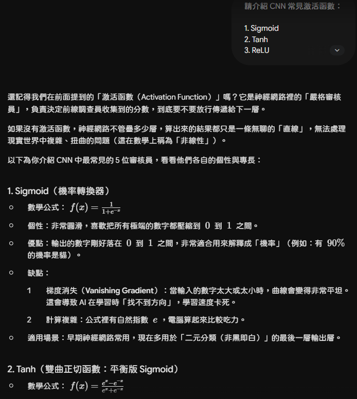
2.3 AI 輔助學習的整體評估
查證與修正
針對 AI 回答中的一個核心概念進行獨立查證，並記錄是否需要修正原本的理解。
3.1 查證主題
「Pooling 層真的能賦予 CNN 完美的『平移不變性』嗎？」
AI 在對話 (Turn 8) 中提到，Max Pooling 透過抓取 2×2 區域內的最大值，可以讓 AI 「不會因為物體稍微平移或變形就認不出來」。這聽起來很直觀，但在嚴謹的學術研究中，這說法其實是一種過度簡化，甚至有被推翻的疑慮。
3.2 查證過程
更致命的是，近代研究指出，帶有 Stride 的 Pooling（降採樣）實際上會引發「混疊現象 (Aliasing)」，反而會破壞神經網路的平移不變性。真正讓現代 CNN 具備強大平移不變性的原因，更多是來自於 Global Average Pooling 與大量的 Data Augmentation（資料增強）。
3.3 查證資料來源
論文明確指出，傳統 CNN 中的下採樣（如 Max Pooling）會破壞平移不變性，並提出使用抗混疊濾波器（Anti-aliasing filter）來修正此問題。
來源 2：Goodfellow, I., Bengio, Y., & Courville, A. (2016). Deep Learning. MIT Press.
書中提到 Pooling 僅對「微小平移」具備不變性，對於較大的平移，模型仍需依賴其他機制（如卷積層本身的權重共享）。
3.4 查證結論
CNN 架構視覺化
透過圖表呈現 CNN 的整體架構，以及點擊各層查看詳細說明。
4.1 架構資料流向圖
4.2 互動式卷積運算示範
自訂輸入矩陣與卷積核，透過逐步動畫理解卷積計算的每個步驟
接收原始像素值，彩色圖片有 RGB 三個通道，維度為 H×W×3。
多個卷積核滑動掃描影像，生成多張特徵圖，每張對應一種視覺特徵的響應。
對特徵圖進行降維，保留最顯著的特徵，降低計算量並提升位移穩健性。
整合所有特徵資訊，進行高層次的語義分析，輸出各類別的預測分數。
CNN 的實際應用案例
CNN 的影響力已遍及眾多行業，以下是幾個具代表性的應用場景。
5.1 常見應用領域

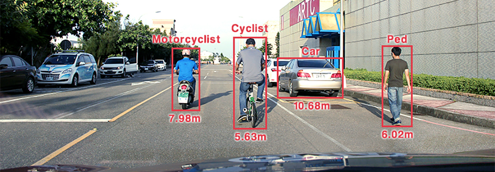
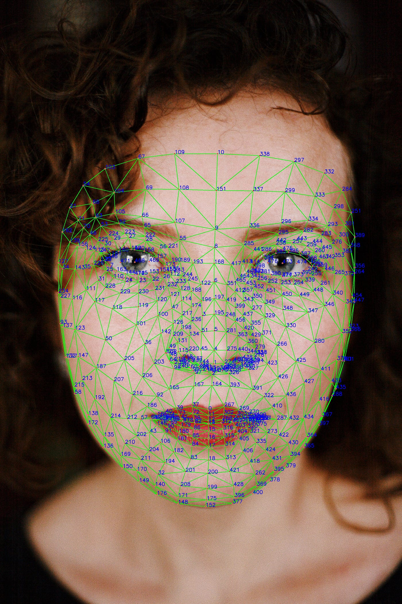
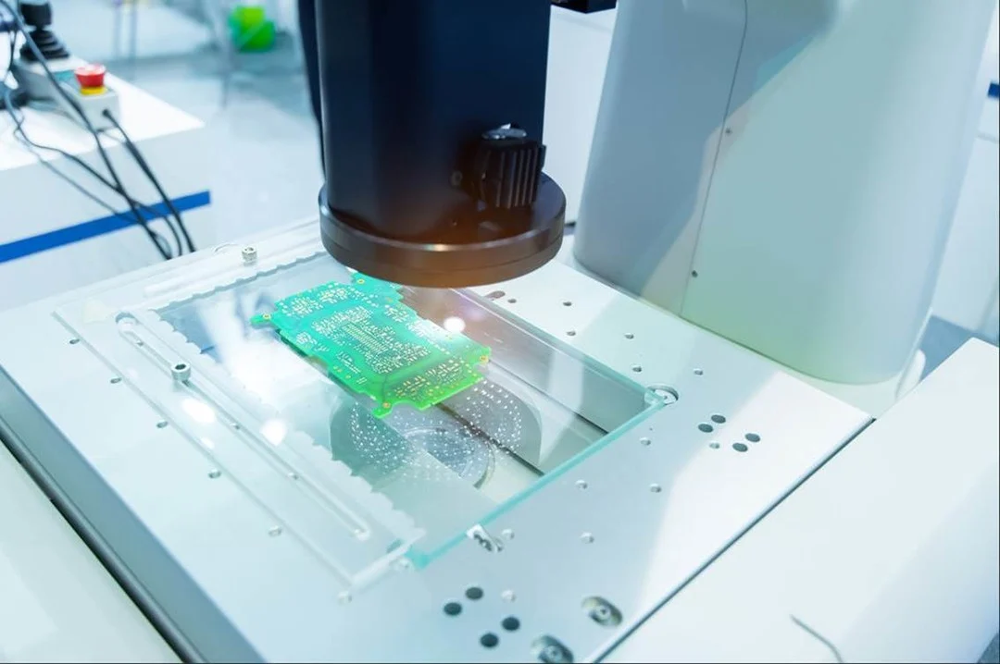
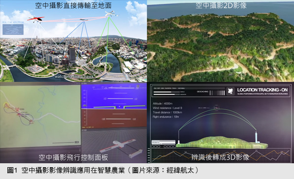
5.2 深入案例分析
2017 年，史丹佛大學的研究團隊在《Nature》期刊上發表了一篇重要論文，展示了一個基於 CNN 的皮膚癌診斷系統。該系統在 129,450 張皮膚病灶圖片上訓練後，接受與 21 位皮膚科醫師相同的測試，結果顯示 AI 的診斷準確率與皮膚科醫師相當，甚至在某些分類上略勝一籌。
這個案例的意義在於：CNN 無需人工設計「什麼是惡性腫瘤的特徵」，而是從數十萬張圖片中自動學習到醫師花數年才能習得的視覺診斷模式。這正體現了深度學習最根本的革命性——讓機器從數據中自主歸納規律。
5.3 CNN 的致命弱點與未來挑戰
CNN 在幾十個應用領域進行得如火如荘，却同時有幾個深刻的結構性缺陷至今仍未完全解決。展現批判性思考，不認識這些限制，才能真正理解與遇見 CNN 。
2013 年，Szegedy 等人發現了 CNN 一個令人震驚的脆弱性：只需在輸入影像上疊加一層人類肉眼完全察覺不到的微小擾動（雜訊），就能讓訓練精良的 CNN 以極高的信心度做出完全錯誤的判斷——這類攻擊被稱為「對抗性攻擊」。
傳統 CNN 本質上只能判斷「某個特徵存不存在」，卻無法理解特徵之間的相對空間關係。最著名的思想實驗：若將一張人臉照片中眼睛與嘴巴的位置互換，CNN 可能仍會自信地判斷它是「人臉」——因為所有的臉部特徵依然存在，只是位置錯誤。
學習反思
記錄這次以 AI 輔助學習 CNN 的完整心得，包含 AI 的幫助、限制，以及自己真正學到了什麼。
6.1 學習歷程反思
6.2 總結與展望
總結而言，這次以「AI 輔助 + 自主查證」的學習模式，讓我對 CNN 有了從淺到深的系統性理解。AI 大幅降低了入門門檻，讓我能夠在短時間內建立起整體的概念框架；而獨立查證的過程，則讓我真正掌握了細節，並發展出對資訊的批判思維。這種學習方式值得在未來持續採用，但必須始終記得：AI 是一把強大的工具，而不是不容置疑的答案。
資料來源
本報告所引用的文字、圖片及參考文獻一覽。
7.1 論文與技術文件
- LeCun, Y., Bottou, L., Bengio, Y., & Haffner, P. (1998). Gradient-based learning applied to document recognition. Proceedings of the IEEE, 86(11), 2278–2324.
- Krizhevsky, A., Sutskever, I., & Hinton, G. E. (2012). ImageNet classification with deep convolutional neural networks. Advances in Neural Information Processing Systems, 25.
- Esteva, A., et al. (2017). Dermatologist-level classification of skin cancer with deep neural networks. Nature, 542(7639), 115–118.
- Zhang, R. (2019). Making Convolutional Networks Shift-Invariant Again. International Conference on Machine Learning (ICML).
- Goodfellow, I., Bengio, Y., & Courville, A. (2016). Deep Learning. MIT Press.
- He, K., Zhang, X., Ren, S., & Sun, J. (2016). Deep residual learning for image recognition. Proceedings of the IEEE conference on computer vision and pattern recognition.
7.2 網路資源與圖片來源
- 楊立昆（Yann LeCun）照片 — Wikipedia. 維基百科：楊立昆。授權：CC BY 2.0。
- LeNet-5 架構示意圖 — Medium. 卷積神經網路（CNN）的經典網路架構（一）。
- AI 醫療影像辨識延伸閱讀 — 科技大觀園. AI 如何辨識皮膚癌。國科會科技大觀園。
- CNN 運算流程圖 — Medium. 卷積神經網路 (Convolutional Neural Network, CNN) 運算流程。
- 醫療影像分析應用圖片 — Medium. 深度學習在醫療影像之應用。
- 自動駕駛應用圖片 — TechNews. Wevolver 2020 自駕車技術報告。
- 人臉辨識應用圖片 — Medium. 人臉辨識 基本流程/測試標準。
- 影像生成應用圖片 — CSDN. 圖像風格遷移(Neural Style)。
- 醫療影像診斷圖片 — iThome. AI 醫療影像診斷應用 — iThome。
- 自動駕駛圖片 — 科技大觀園. 自動駕駛應用 — 國科會科技大觀園。
- 人臉辨識圖片 — Medium. MediaPipe Landmark Face, Hand, Pose Sequence Number List View。
- 工業品質檢測圖片 — TechOrange. 台達電機 AOI 光學檢測系統 — TechOrange。
- 智慧農業圖片 — 行政院農委會電子報. 智慧農業 CNN 應用 — 行政院農委會。
- 智慧零售圖片 — Cool3C. 日本工具零售商 MonotaRo 無人商店應用 — Cool3C。
7.3 AI 輔助工具
- Gemini — 協助理解核心概念、解釋網路架構，並輔助程式碼之撰寫。
- ChatGPT — 提供各階段學習之精準提問提示詞，引導整體探索之方向。
- Claude — 負責網站整體介面之結構設計、排版調整與內容語句校正。
- NotebookLM — 負責相關學術論文之重點精粹，與各項參考資料之統整。
- Antigravity IDE — 協助本網頁互動式元件之開發設計、程式碼編寫與其迭代。